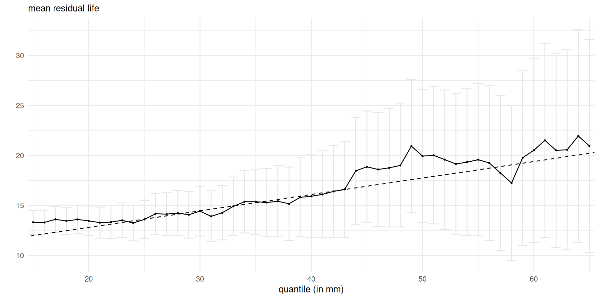
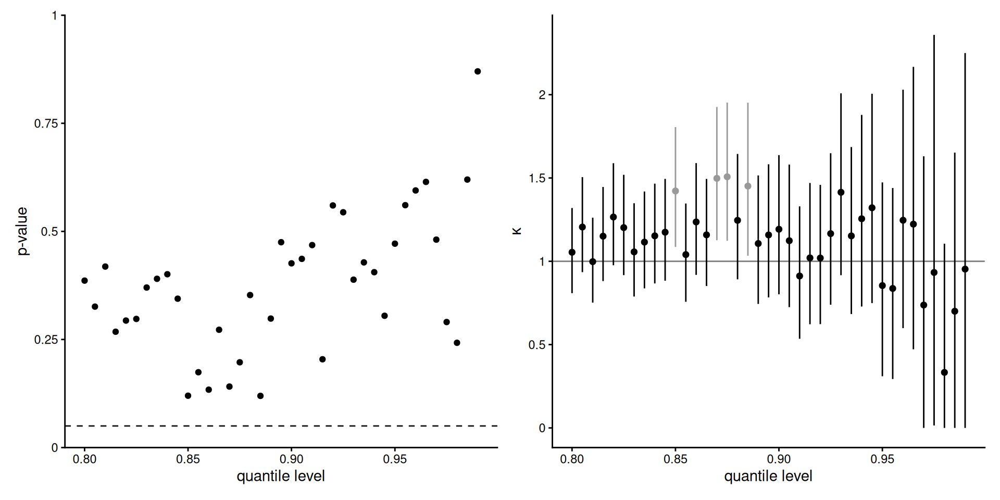
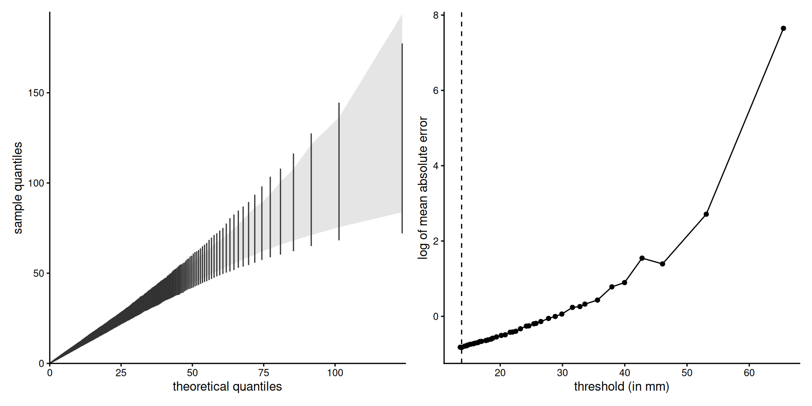

Choosing the threshold in extreme value analysis
ZüKoSt: Seminar on Applied Statistics
Léo Belzile, HEC Montréal
Thursday, Nov 20, 2025
Motivation
Typical research question
Consider daily total rainfall data from Padova for July–September over the period 1878–2016, yielding \(n=3311\) data points in excess of 2mm (Marani and Zanetti 2015).
Research question: what is the expected maximum rainfall episode over a 50 year period?
Peaks over threshold
Extremes from a stationary time series may be modelled by considering only the \(n_u\) observations that exceed a threshold \(u\).

The threshold \(u\) is a fixed location parameter determined by the user.
Mathematical framework
Under mild conditions, there exists a positive function \(\sigma_u\) such that, as \(u\) approaches the upper support point of \(Y\), \[\begin{equation}\label{eq1} \Pr\{(Y-u)/\sigma_u>y\mid Y>u\} \to (1 + \xi y)_+^{-1/\xi}, \quad y>0, \end{equation}\] uniformly in \(y\).
Exceedances \(X = Y-u >0\) over a sufficiently high threshold \(u\) are thus approximately generalized Pareto distributed. We write \(X \sim \textsf{GP}(\sigma_u, \xi).\)
Risk measures and extrapolation
\[\begin{align*} \Pr(Y > v) &= \Pr(Y > v \mid Y>u)\Pr(Y > u) \\ & \approx \{1 + \xi (v-u)/\sigma_u\}_+^{-1/\xi} \zeta_u \end{align*}\]
There are three parameters:
- the scale \(\sigma_u\) (threshold dependent),
- the shape \(\xi\),
- the probability of exceedance \(\zeta_u = \Pr(Y > u)\).
Fixed or random threshold?
- random: \(n_u\) is fixed and \(u\) is an order statistic (sample value) \(Y_{(n-n_u)}\).
- fixed: if \(u\) is a fixed quantity (20 mm of rain), then the probability of exceedance \(\zeta_u = \Pr(Y > u)\) is random.
Write \(\mathcal{U} = u_1 \le \cdots \le u_K\) for the set of thresholds under consideration.
Risk measures
Let \(G(x; \sigma_u, \xi)\) denotes the generalized Pareto distribution function above \(u\).
If there are on average \(n_y\) observations per year, then the \(N\) year maximum distribution above \(u\) is approximately \[G^{Nn_y\zeta_u}(x; \sigma_u, \xi).\]
We can also consider the \(N\) year return level, the quantile of an annual maximum exceeded with probability \(1/N\) in any given year, \(G^{-1}\{1-1/(\zeta_u n_y N)\}.\)
Expected value of 50-year maximum

Figure 1: Bayesian and frequentist inference based on a threshold of \(u=30\)mm.
Guided recipe
In the simplest applications:
- we choose a high threshold \(u\) or equivalently \(n_u\).
- we fit the limiting generalized Pareto distribution with scale \(\sigma_u\) and shape \(\xi\) to exceedances \(Y-u\) above the threshold \(u\).
- we use the resulting model for extrapolation beyond \(u\).
How to choose the threshold?
Objective
We provide an extensive review of threshold selection mechanisms for peaks over threshold analysis, including
- visual diagnostics,
- extended generalized Pareto models,
- goodness-of-fit tests,
- semiparametric methods based on Hill’s estimator.
We also perform simulation experiments to assess their performances over a range of distribution, with rounded and serially correlated data.
Why another survey paper?
There are earlier reviews of the topic, but the literature keeps increasing…
- The most comprehensive reviews are Scarrott and MacDonald (2012), Caeiro and Gomes (2016) and Langousis et al. (2016).
- Selective numerical comparisons in Gomes and Oliveira (2001), Schneider, Krajina, and Krivobokova (2021) and Murphy, Tawn, and Varty (2025), among others.
More than 40 methods implemented and compared through simulations.
Hill estimator
For a random sample \(Y_{(1)} \leq \cdots \leq Y_{(n)},\) the Hill (1975) estimator for \(\xi>0\) is \[H_{n,n_u} = \frac{1}{n_u} \sum_{i=n-n_u+1}^{n} \log Y_{(i)} - \log Y_{(n-n_u)}.\] The Weissman (1978) estimator of the quantile at level \(1-p\) is \[Q_{n_u}(1-p) = Y_{(n-n_u)}\{n_u/(pn)\}^{H_{n,n_u}}.\]
Maximum likelihood estimator
Treat exceedances above \(u\) as an exact sample from generalized Pareto, estimate parameters using Grimshaw (1993) algorithm.

- Works for \(\xi \in \mathbb{R}\).
- Readily extends to different sample schemes (censoring, truncation, dependence on covariates)
- Coherent framework for testing and extrapolation
- Larger variance than Hill estimator for \(\xi\).
Figure 2: Estimates of shape (left) and 100-year return level (right) as a function \(n_u\) corresponding to threshold \(X_{(n-n_u)}.\)
Bias and variance trade-off
- The quality of the generalized Pareto approximation improves as \(u\) converges to the endpoint. Taking \(u\) too low increases the risk of biased extrapolation.
- Taking \(u\) too high will mean that the number of exceedances \(n_u\) is small (high uncertainty of estimators of \(\sigma_u\) and \(\xi\)). We need enough data (at least \(n_u=20\), say).
Properties underlying threshold selection
Threshold stability and extrapolation
If \(X\sim \mathsf{GP}(\sigma,\xi),\) then for any \(v>0\) such that \(\sigma_v=\sigma+ \xi v > 0\), we have \[\begin{align*} X-v \mid X>v \sim \mathsf{GP}(\sigma_v, \xi) \end{align*}\] This property is termed threshold stability. The shape is in principle constant.
The mean excess is also linear in \(v\): \[\begin{align} e(v) = \mathrm{E}(X - v \mid X>v) = \frac{\sigma}{1-\xi} + \frac{\xi}{1-\xi} v, \quad v\geq 0. \label{eq:mrl} \end{align}\]
Consistency
We work under ‘’domain of attraction’’ condition, meaning that usual asymptotics are only valid if the threshold increases with the sample size.
For consistency, we need an intermediate sequence \(n_u/n \to 0\), but \(n_u, n \to \infty\), e.g., \(n_u = \lceil n- n^q\rceil\) for \(q \in (0,1)\), with \(q=0.995\) or \(q=0.999.\)
Simple rules such as using a fixed proportion of the data by setting \(n_u\approx np\) for some fixed \(p\), do not satisfy this.
Second-order regular variation
Suppose that its distribution function \(F\) has two continuous derivatives and is continuous at its endpoint.
Define
- \(\xi\) denote the limiting shape parameter for the generalized Pareto approximation.
- \(u_t=F^{-1}(1-1/t)\) be the \(1-1/t\) quantile of \(F,\)
- \(\sigma_t = r(u_t),\) where \(r(t) = \{1-F(t)\}/f(t)\) is the reciprocal hazard function,
- \(\xi_t = r'(u_t)\) is the penultimate approximation to the shape.
- \(A(t) =\xi_t - \xi,\) assuming \(u_t\) is twice differentiable and \(u_t'\) is eventually positive.
Asymptotic normality
Under a second order regular variation assumption with \(\lim_{n_u \to \infty} \sqrt{n_u}A(n/n_u) = \lambda\in \mathbb{R}\), subject to which (Theorem 3.2.5 of de Haan and Ferreira 2006) \[\begin{align*} n_u^{1/2}(H_{n,n_u} - \xi) \to \mathsf{normal}\{\lambda/(1-\rho), \xi^2\}, \quad \rho \leq 0. \end{align*}\]
Similar results hold for maximum likelihood estimators.
Minimizing mean squared error
Many heavy-tailed distributions fall within the Hall and Welsh (1985) class have \(A(t) = \beta t^\rho\) for \(\beta \neq 0\) with \(\rho < 0.\)
The asymptotic mean squared error of Hill’s estimator is \[\mathsf{AMSE}(H_{n,n_u}) = \xi^2/n_u + A^2(n/n_u)/(1-\rho)^2,\] which is minimized when \[\begin{align} n_u = \left\lfloor \frac{(1-\rho)^2 n^{-2\rho}}{-2\rho \beta^2}\right\rfloor^{\frac{1}{1-2\rho}}. \end{align}\]
Penultimate approximations
Smith (1987) show that a better approximation to the tail is obtained by letting the shape vary with \(u\), taking \(\mathsf{GPD}(\sigma_u, \xi_u)\), where \(\xi_u = r'(u).\).

Point process formulation
The generalized Pareto distribution can be derived from a limiting Poisson process \({\mathcal P}\) under which rare events occur in the \((t,y)\)-plane with measure \[\begin{align*} \Lambda[(t',t)\times[u,\infty)] = (t_2-t_1)\{1+\xi(u-\eta)/\sigma\}^{-1/\xi}_+, \qquad \eta \in \mathbb{R}, \sigma > 0. \end{align*}\]
The vertical coordinates of \({\mathcal P}\) can be generated as \[\begin{align*} \eta + \frac{\sigma}{\xi}\Bigg\{\Bigg(\sum_{j=1}^r E_j\Bigg)^{-\xi} - 1\Bigg\}, \quad r=1,2,\ldots; \end{align*}\] where the \(E_j\) are independent exponential random variables.
The choice of threshold then amounts to choosing the highest value for which the transformed observations are consistent with a unit-rate Poisson process.
Rényi representation
Threshold-stability and the Markov nature of order statistics \(X_{(1)}\leq\cdots\leq X_{(n)}\) of a simple random sample drawn from \(\mathsf{GP}(\sigma,\xi)\) imply that
- \(X_{(1)} \sim \mathsf{GP}(\sigma/n,\xi/n)\)
- the increments \(X_{(j)}-X_{(j-1)} \mid X_{(j-1)}=x_{(j-1)}\) have \(\mathsf{GP}\{\sigma_j, \xi/(n+1-j)\}\) distributions, for \(j=2, \ldots, n\), and are independent of the lower order statistics.
Hill (1975) proposes testing for exponentiality, but the departure is very gradual (Hall and Welsh 1985), so too small thresholds are returned.
Selection methods
Common challenges
Conditional model: only consider data above the threshold.
Problems:
- Sequential analysis: dependence between estimates, test statistics, \(P\)-values due to sample overlap.
- Non-nested models (as the sample changes with the threshold).
- Multiple testing problem.
Mean residual life plot
Mean residual plot (Davison and Smith 1990), which graphs the empirical mean excesses \(e(u)\) against thresholds \(u \in \mathcal{U}.\)
Common practice is to find a region above which the slope looks linear.
Automation proposed by Langousis et al. (2016) based on weighted regression.

Threshold stability plots

Caveats of graphical diagnostics
Extended generalized Pareto models
Embed generalized Pareto \(F(x;\sigma,\xi)\) in a more flexible model using a continuous distribution function \(G_\kappa\) on \([0,1]\). The EGP\((\sigma,\xi, G_\kappa)\) distribution function is then \[\begin{align*} \Pr(X\leq x) = G_\kappa\{ F(x;\sigma,\xi)\}. \end{align*}\] Choose \(G\) to keep the tail properties. See the chapter of Naveau (2025) for a recent review.
Piecewise generalized Pareto model
Northrop and Coleman (2014) specify a truncated generalized Pareto distribution with shape \(\xi_i\) in interval \([u_{i}, u_{i+1})\), and continuity constraints for the scale parameters.
The model has parameters \(\xi_1, \ldots, \xi_K, \sigma,\) and reduces to the generalized Pareto above \(u_k\) if \(\xi_k = \cdots = \xi_K\).
The power of the test is sensitive to the choice of the largest threshold \(u_K\).
Extended generalized Pareto models for Padova data
Figure 3: Northrop and Coleman (2014) score test (left) and confidence intervals for \(\kappa=1\) for EGP distribution (right)
Extended generalized Pareto models
Test for restriction to generalized Pareto sub-model using likelihood ratio or score tests.
- Could allow for a bit more data to be included, at the expense of additional parameters to estimate (and potentially more variability).
- Same problems as parameter stability plots (sequential tests, overlapping data).
Splicing models
Glue a distribution for the bulk with one for the tail using a mixture of disjoint components below \(u\) (bulk) and above \(u\) (generalized Pareto).
See Scarrott and MacDonald (2012) and Hu and Scarrott (2018) for reviews.
A ‘’parametrized tail fraction’’ model uses a mixture of truncated distribution \(H\) below and generalized Pareto above \(u\), with mixing probability \(\zeta_u\), \[\begin{align*} F(x; \boldsymbol{\theta}) = \begin{cases} (1-\zeta_u){H(x; \boldsymbol{\theta})}/{H(u; \boldsymbol{\theta})} ,& x \leq u, \\ (1-\zeta_u) + \zeta_u\left\{1-\left(1+\xi\frac{x-u}{\sigma}\right)^{-1/\xi}\right\} ,& x > u. \end{cases} \end{align*}\]
Splicing models for Padova data

Drawback and advantages of splicing models
Model all of the data, but need flexible models for bulk (kernel density mixtures). The choice of \(u\) still critical.
- If \(u\) is a parameter, the profile likelihood for threshold \(u\) needs not be monotone.
- Fit of the tail may be driven by bulk (sample contamination)
- Sharp discontinuity at \(u\), continuity constraints or random threshold (Nascimento, Gamerman, and Lopes 2012) alleviate this somewhat.
Goodness-of-fit measures
- Fit a generalized Pareto distribution at each candidate threshold.
- Compute either
- a suitable statistic which indicates departure from the postulated distribution.
- a measure of discrepancy between empirical distribution of exceedances above \(u\) and generalized Pareto model (via Kolmogorov–Smirnov, Cramér–von Mises, etc.)
- Perform tests sequentially until rejection, or select the “best” threshold according to the criterion.
Some proposals
- Idea dates back to Pickands (1975).
- Choulakian and Stephens (2001), Thompson et al. (2009), Bader, Yan, and Zhang (2018) (using ForwardStop).
- Recent proposals using \(L\)-moment estimators including Kiran and Srinivas (2021), Solari et al. (2017), Silva Lomba and Fraga Alves (2020).
Note: goodness-of-fit tests null distributions require adjustment for rounded values (estimate null via Monte Carlo).
Metric-based adjustment
The visual assessment of model quality often uses a quantile-quantile plot. Varty et al. (2021), Murphy, Tawn, and Varty (2025) and Collings et al. (2025) propose comparing Q-Q plot positions with expected ones, accounting for estimation uncertainty. The recommended metric is the mean absolute error between quantiles. The selected threshold is the one that minimizes the metric.
- obtain maximum likelihood estimates above \(u,\) say \(\widehat{\sigma}_u, \widehat{\xi}_u.\)
- fix a grid \(\mathcal{P} = p_1 \leq \cdots \leq p_m\) of probability levels at which to evaluate the fit.
- generate \(B\) bootstrap samples of exceedances and fit the generalized Pareto model to get \(\widehat{\sigma}^{(b)}_u, \widehat{\xi}^{(b)}_u\) for \(b=1, \ldots, B.\)
- obtain the \(x\)-axis positions using the generalized Pareto quantile function with parameters \(\widehat{\sigma}^{(b)}_u, \widehat{\xi}^{(b)}_u.\)
- obtain the \(y\)-axis positions from the empirical quantile function evaluated at \(\mathcal{P}.\)
- compute the average metric over plotting positions \(\mathcal{P}\) and the \(B\) bootstrap samples.
Metric-based adjustment
Bayesian predictive distribution
Northrop, Attalides, and Jonathan (2017) propose a Bayesian method based on leave-one-out cross validation with a binomial-generalized Pareto (BGP) model and a single validation threshold \(v > u_k\) above which we assess the model performance.
The measure of goodness-of-fit proposed is an estimate of the negated Kullback–Leibler divergence, \[\begin{align*} \widehat{T}_v(u_j) = \sum_{i=1}^n \log\widehat{f}_v(x_r \mid \boldsymbol{x}_{-r}, u_j). \end{align*}\] The selected threshold is the one maximizing this diagnostic.
Can use Bayesian model averaging to account for the uncertainty originating from threshold selection.
Bayesian measures

Semiparametric methods
Threshold selection is typically based on minimizing an asymptotic mean squared error for Hill’s estimator.
These procedures either
- estimate higher-order parameters that appear in the asymptotic mean squared error formula, or
- fix them (e.g., setting \(\rho=-1\)), or
- use bootstrap schemes to circumvent having to do so.
Bootstrap methods
Generalization of the method proposed in Hall (1990)
- estimate the shape parameter using Hill’s estimator with the \(n_0\) largest order statistics;
- perform a bootstrap loop (\(B\) replications): resample \(m < n\) observations with replacement and compute Hill’s estimator for the \(n_m=1, \ldots, m\) largest order statistics. Denote the shifted estimates for the \(b\)th bootstrap replicate \(d^{(b)}_{n_m}=(\widehat{H}^{(b)}_{m, n_m} - \widehat{H}_{n, n_0})^2\);
- average \(d^{(b)}_{n_m}\) over all bootstrap replications for each \(n_m=1, \ldots, m\) and select \(\widehat{n}_m\) that minimizes the mean squared error.
- for given \(\rho\), compute the optimal number of exceedances for the full sample \(\widehat{n}_u = \widehat{n}_m(n/m)^{-2\rho/(1-2\rho)}.\)
The method is sensitive to the choice of \(n_0\) and \(m=\mathrm{o}(n)\), which is left to the user
Semiparametric methods
Other proposals include
- Goegebeur, Beirlant, and Wet (2008),
- Bladt, Albrecher, and Beirlant (2020) and
- Schneider, Krajina, and Krivobokova (2021)
They relate the bias and MSE of Hill estimator with other estimators for \(\xi>0\), and use these to minimize the mean squared error under the assumption \(\rho=-1.\)
Random block maxima

Wager (2014) propose an alternative estimator (random block maxima) based on \(U\)-statistics, whose sample paths are \(\mathcal{C}^{\infty}\) as a function of \(n_u.\)
Approximating the bias using the derivative of the sample path (which is its expected value up to scaling) leads to an empirical minimization of the MSE.
Simulation results
Setting
We generate \(n=2000\) observations from 16 distributions with varying shape parameters.
We set the fixed grid \(\mathcal{U}\) at the empirical \(\{0.8, 0.81, \ldots, 0.98\}\) quantiles.
How to benchmark methods?
What makes a threshold procedure good? In practice, we care about the extrapolation, often
- a high quantile (return level), or
- a probability of exceedance.
Benchmarking the method based on proximity with the asymptotic shape parameter is not a good point of reference.
Parametric methods

Comments
- The methods of Thompson et al. (2009), Süveges and Davison (2010), Northrop, Attalides, and Jonathan (2017), Silva Lomba and Fraga Alves (2020) and Kiran and Srinivas (2021) lead to much less agreement and a greater variability of selected quantile levels for the thresholds.
- Wadsworth (2016) sequential testing fails 17% of the time, even after reducing the number of thresholds considered and with sample sizes of 1000 observations. It performs best with heavy tailed distributions, and is generally competitive.
- The procedures of Varty et al. (2021) and Murphy, Tawn, and Varty (2025) perform well relative to the oracle (except for distribution \(j\)), but tend to select very low thresholds. Their relative performance however varies much.
- The Bayesian model averaging method of Northrop, Attalides, and Jonathan (2017) is competitive in all scenarios.
Semiparametric methods (shape parameters)

Semiparametric methods (number of exceedances)

Comments
- The Hill estimator struggles with distributions for which \(\xi\) is low, but excels for very heavy tailed distributions. The exponential estimator and the random block maxima are more variable for the latter case;
- The Beirlant, Vynckier, and Teugels (1996) procedure is extremely variable, both for the selection of \(n_u\) and for the estimation of \(\xi\). It often fails to fit.
- The methods of Hall and Welsh (1985) and Caeiro and Gomes (2014) behave erratically with small shape parameters, giving shape parameter estimates that show strong upward bias. They retain more than 15% of the data for inference, with a wide range of values of order statistics \(n_u\).
- The proposals of Bladt, Albrecher, and Beirlant (2020) and Schneider, Krajina, and Krivobokova (2021) work very well in the heavy-tailed case.
Comments
- The minimization of AMSE of Caeiro and Gomes (2016) and Gomes, Figueiredo, and Neves (2012) display low relative root mean squared error for quantile estimation, consistently across all scenarios, although the methods based on minimization of the asymptotic mean squared error can break down catastrophically.
- The method with the lowest relative bias for quantiles is Guillou and Hall (2001), the lower mean squared errors are given by the Danielsson et al. (2019) minimization of the Kolomogorov–Smirnov distance (for \(\xi < 0.25\)) and Bladt, Albrecher, and Beirlant (2020) (\(\xi \geq 0.5\));
- Drees and Kaufmann (1998) fails to return valid values for \(n_u\) in around 80% of cases. When it works, it leads to small values of \(n_u\), and to shape estimates that are below average and too variable.
Comments
- The Dupuis and Victoria-Feser (2003) estimator leads to very small number of exceedances, and thus variable and negatively-biased shape estimates, but performs best for quantile estimation for low shape parameter.
- The sampling distributions of the shape parameters for the methods of Reiss and Thomas (2007) are left-skewed.
Conclusions
- There is no clear winner, but some methods are clearly suboptimal.
- Estimation of second order parameters is difficult and typically far too noisy to be useful. More stable methods are obtained by fixing \(\rho\) to a negative value, or bypassing its estimation completely, as in Wager (2014).
- Many algorithms consider all potential choice of threshold, irrespective of the minimum number of exceedances needed for reliable estimation, or of the fact only the largest observations should be selected.
Conclusions
Are we barking up the wrong tree?
- Is the problem well-formulated? there is no “correct” threshold.
- Threshold selection has often a tremendous impact on conclusion, so perhaps it would make more sense to fit sub-asymptotic models to much more data, while avoiding if possible contamination.
- Weighting and model averaging to account for model uncertainty is promising, but validation criteria have huge impacts.
Question period
Thank you for your attention.
This presentation is based on joint work with Anthony Davison, with valuable insights from Sonia Alouini.
18 methods are implemented in package mev (version 2.1).
Thanks to NSERC for funding.

Distributions
- gamma with shape \(2\) and scale \(1\);
- standard lognormal;
- Weibull with scale \(1\) and shape \(0.75\);
- Weibull with scale \(1\) and shape \(1.25\);
- piecewise generalized Pareto with shape \(0.25\) up to \(u=1.25\) and \(-0.25\) above
- standard exponential (\(\xi=0\))
- generalized Pareto with shape \(\xi=0.15\)
- generalized Pareto with shape \(\xi=-0.15\)
- Student-\(t\) with 6 degrees of freedom \((\xi=1/6\)) truncated on \(\mathbb{R}^{+}\);
- standard Fréchet with shape \(\xi=0.5\);
- standard Cauchy (\(\xi=1\)) truncated on \(\mathbb{R}^{+}\);
- loggamma with density function \(\log(x) x^{-2}\) for \(x \geq 1\) (\(\xi=1\));
- Burr with survival function \((1+x^{2})^{-1}\) for \(x>0\) (\(\xi=0.5\));
- piecewise generalized Pareto (Northrop and Coleman 2014) with shape \(-0.5\) up to the \(0.9\) quantile and \(0.25\) above;
- third extended generalized Pareto model of Papastathopoulos and Tawn (2013) (power model) with \(\xi=-0.2\), unit scale and \(\kappa = 0.25\);
- exponential tilting extended generalized Pareto model with shape \(\xi =0.2\) and \(\kappa=0.1\)
References
Bader, Brian, Jun Yan, and Xuebin Zhang. 2018. “Automated Threshold Selection for Extreme Value Analysis via Ordered Goodness-of-Fit Tests with Adjustment for False Discovery Rate.” The Annals of Applied Statistics 12 (1): 310–29. https://doi.org/10.1214/17-aoas1092.
Beirlant, Jan, Petra Vynckier, and Josef L. Teugels. 1996. “Excess Functions and Estimation of the Extreme-Value Index.” Bernoulli 2 (4): 293–318.
Bladt, Martin, Hansjörg Albrecher, and Jan Beirlant. 2020. “Threshold Selection and Trimming in Extremes.” Extremes 23 (4): 629–65. https://doi.org/10.1007/s10687-020-00385-0.
Caeiro, Frederico, and Ivette Gomes. 2014. “On the Bootstrap Methodology for the Estimation of the Tail Sample Fraction.” In Proceedings of COMPSTAT 2014, 545–52.
Caeiro, Frederico, and M. Ivette Gomes. 2016. “Threshold Selection in Extreme Value Analysis.” In Extreme Value Modeling and Risk Analysis: Methods and Applications, edited by Dipak K. Dey and Jun Yan, 69–86. Boca Raton, FL: CRC Press. https://doi.org/10.1201/b19721.
Castillo, Joan del, and Maria Padilla. 2016. “Modelling Extreme Values by the Residual Coefficient of Variation.” Statistics and Operations Research Transactions 40 (2): 303–20. https://doi.org/10.2436/20.8080.02.45.
Choulakian, Vartan, and Michael A Stephens. 2001. “Goodness-of-Fit Tests for the Generalized Pareto Distribution.” Technometrics 43 (4): 478–84. https://doi.org/10.1198/00401700152672573.
Collings, T. P., C. J. R. Murphy-Barltrop, C. Murphy, I. D. Haigh, P. D. Bates, and N. D. Quinn. 2025. “Automated Tail-Informed Threshold Selection for Extreme Coastal Sea Levels.” Natural Hazards and Earth System Sciences 25 (11): 4545–62. https://doi.org/10.5194/nhess-25-4545-2025.
Danielsson, Jon, Lerby Ergun, Casper G. de Vries, and Laurens de Haan. 2019. “Tail Index Estimation: Quantile-Driven Threshold Selection.” https://doi.org/10.34989/swp-2019-28.
Davison, Anthony C., and Richard L. Smith. 1990. “Models for Exceedances over High Thresholds (with Discussion).” Journal of the Royal Statistical Society. Series B. (Methodological) 52 (3): 393–442. https://doi.org/10.1111/j.2517-6161.1990.tb01796.x.
de Haan, L., and A. Ferreira. 2006. Extreme Value Theory: An Introduction. New York: Springer. https://doi.org/10.1007/0-387-34471-3.
Drees, Holger, and Edgar Kaufmann. 1998. “Selecting the Optimal Sample Fraction in Univariate Extreme Value Estimation.” Stochastic Processes and Their Applications 75 (2): 149–72. https://doi.org/10.1016/s0304-4149(98)00017-9.
Dupuis, Debbie J., and Maria-Pia Victoria-Feser. 2003. “A Prediction Error Criterion for Choosing the Lower Quantile in Pareto Index Estimation.” University of Geneva. https://archive-ouverte.unige.ch/unige:5789.
Gamet, Philémon, and Jonathan Jalbert. 2022. “A Flexible Extended Generalized Pareto Distribution for Tail Estimation.” Environmetrics 33 (6). https://doi.org/10.1002/env.2744.
Goegebeur, Yuri, Jan Beirlant, and Tertius de Wet. 2008. “Linking Pareto-Tail Kernel Goodness-of-Fit Statistics with Tail Index at Optimal Threshold and Second Order Estimation.” REVSTAT-Statistical Journal 6 (1): 51–69. https://doi.org/10.57805/revstat.v6i1.57.
Gomes, M. Ivette, Fernanda Figueiredo, and M. Manuela Neves. 2012. “Adaptive Estimation of Heavy Right Tails: Resampling-Based Methods in Action.” Extremes 15 (4): 463–89. https://doi.org/10.1007/s10687-011-0146-6.
Gomes, M. Ivette, and Orlando Oliveira. 2001. “The Bootstrap Methodology in Statistics of Extremes—Choice of the Optimal Sample Fraction.” Extremes 4 (4): 331–58. https://doi.org/10.1023/a:1016592028871.
Grimshaw, Scott D. 1993. “Computing Maximum Likelihood Estimates for the Generalized Pareto Distribution.” Technometrics 35 (2): 185–91. https://doi.org/10.1080/00401706.1993.10485040.
Guillou, Armelle, and Peter Hall. 2001. “A Diagnostic for Selecting the Threshold in Extreme Value Analysis.” Journal of the Royal Statistical Society: Series B (Statistical Methodology) 63 (2): 293–305. https://doi.org/10.1111/1467-9868.00286.
Hall, Peter. 1990. “Using the Bootstrap to Estimate Mean Squared Error and Select Smoothing Parameter in Nonparametric Problems.” Journal of Multivariate Analysis 32 (2): 177–203. https://doi.org/10.1016/0047-259x(90)90080-2.
Hall, Peter, and A. H. Welsh. 1985. “Adaptive Estimates of Parameters of Regular Variation.” The Annals of Statistics 13 (1): 331–41. https://doi.org/10.1214/aos/1176346596.
Hill, B. M. 1975. “A Simple General Approach to Inference about the Tail of a Distribution.” Annals of Statistics 3: 1163–74. https://doi.org/10.1214/aos/1176343247.
Hu, Yang, and Carl Scarrott. 2018. “
evmix: An R Package for Extreme Value Mixture Modeling, Threshold Estimation and Boundary Corrected Kernel Density Estimation.” Journal of Statistical Software 84 (5): 1–27. https://doi.org/10.18637/jss.v084.i05.
Kiran, Kezhkepurath Gangadhara, and Venkata V. Srinivas. 2021. “A Mahalanobis Distance-Based Automatic Threshold Selection Method for Peaks over Threshold Model.” Water Resources Research 57 (e2020WR027534). https://doi.org/10.1029/2020wr027534.
Langousis, Andreas, Antonios Mamalakis, Michelangelo Puliga, and Roberto Deidda. 2016. “Threshold Detection for the Generalized Pareto Distribution: Review of Representative Methods and Application to the NOAA NCDC Daily Rainfall Database.” Water Resources Research 52 (4): 2659–81. https://doi.org/https://doi.org/10.1002/2015WR018502.
Marani, Marco, and Stefano Zanetti. 2015. “Long-Term Oscillations in Rainfall Extremes in a 268 Year Daily Time Series.” Water Resources Research 51 (1): 639–47. https://doi.org/10.1002/2014wr015885.
Murphy, Conor, Jonathan A. Tawn, and Zak Varty. 2025. “Automated Threshold Selection and Associated Inference Uncertainty for Univariate Extremes.” Technometrics 67 (2): 215–24. https://doi.org/10.1080/00401706.2024.2421744.
Nascimento, Fernando Ferraz do, Dani Gamerman, and Hedibert Freitas Lopes. 2012. “A Semiparametric Bayesian Approach to Extreme Value Estimation.” Statistics and Computing 22 (2): 661–75. https://doi.org/10.1007/s11222-011-9270-z.
Naveau, Philippe. 2025. “Jointly Modeling Bulk and Tails.” In Handbook of Statistics of Extremes, edited by M. de Carvalho, R. Huser, P. Naveau, and B. J. and Reich, to appear. Boca Raton: Chapman & Hall/CRC.
Naveau, Philippe, Raphael Huser, Pierre Ribereau, and Alexis Hannart. 2016. “Modeling Jointly Low, Moderate, and Heavy Rainfall Intensities Without a Threshold Selection.” Water Resources Research 52 (4): 2753–69. https://doi.org/https://doi.org/10.1002/2015WR018552.
Northrop, Paul J., Nicolas Attalides, and Philip Jonathan. 2017. “Cross-Validatory Extreme Value Threshold Selection and Uncertainty with Application to Ocean Storm Severity.” Journal of the Royal Statistical Society: Series C (Applied Statistics) 66 (1): 93–120. https://doi.org/https://doi.org/10.1111/rssc.12159.
Northrop, Paul J., and Claire L. Coleman. 2014. “Improved Threshold Diagnostic Plots for Extreme Value Analyses.” Extremes 17 (2): 289–303. https://doi.org/10.1007/s10687-014-0183-z.
Papastathopoulos, Ioannis, and Jonathan A. Tawn. 2013. “Extended Generalised Pareto Models for Tail Estimation.” Journal of Statistical Planning and Inference 143 (1): 131–43. https://doi.org/10.1016/j.jspi.2012.07.001.
Pickands, James. 1975. “Statistical Inference Using Extreme Order Statistics.” The Annals of Statistics 3: 119–31. https://doi.org/10.1214/aos/1176343003.
Reiss, R. D., and M. Thomas. 2007. Statistical Analysis of Extreme Values: With Applications to Insurance, Finance, Hydrology and Other Fields. Basel: Springer Birkhäuser. https://doi.org/10.1007/978-3-7643-7399-3.
Scarrott, Carl J., and Anna Elizabeth MacDonald. 2012. “A Review of Extreme-Value Threshold Estimation and Uncertainty Quantification.” REVSTAT – Statistical Journal 10 (1): 33–60. https://doi.org/10.57805/revstat.v10i1.110.
Schneider, Laura Fee, Andrea Krajina, and Tatyana Krivobokova. 2021. “Threshold Selection in Univariate Extreme Value Analysis.” Extremes 24 (4): 881–913. https://doi.org/10.1007/s10687-021-00405-7.
Silva Lomba, Jessica, and Maria Isabel Fraga Alves. 2020. “\(L\)-Moments for Automatic Threshold Selection in Extreme Value Analysis.” Stochastic Environmental Research and Risk Assessment 34 (3): 465–91. https://doi.org/10.1007/s00477-020-01789-x.
Smith, Richard L. 1987. “Approximations in Extreme Value Theory.” Department of Statistics; Operations Research, University of North Carolina. https://lbelzile.bitbucket.io/papers/Smith-1987-Approximations\%5Fin\%5Fextreme\%5Fvalue\%5Ftheory.pdf.
Solari, Sebastián, Marta Egüen, Marı́a José Polo, and Miguel A. Losada. 2017. “Peaks over Threshold (POT): A Methodology for Automatic Threshold Estimation Using Goodness of Fit \(p\)-Value.” Water Resources Research 53 (4): 2833–49. https://doi.org/10.1002/2016wr019426.
Süveges, Mária, and Anthony C. Davison. 2010. “Model Misspecification in Peaks over Threshold Analysis.” Ann. Appl. Stat. 4 (1): 203–21. https://doi.org/10.1214/09-aoas292.
Thompson, Paul, Yuzhi Cai, Dominic Reeve, and Julian Stander. 2009. “Automated Threshold Selection Methods for Extreme Wave Analysis.” Coastal Engineering 56 (10): 1013–21. https://doi.org/https://doi.org/10.1016/j.coastaleng.2009.06.003.
Varty, Zak, Jonathan A. Tawn, Peter M. Atkinson, and Stijn Bierman. 2021. “Inference for Extreme Earthquake Magnitudes Accounting for a Time-Varying Measurement Process.” https://doi.org/10.48550/arXiv.2102.00884.
Wadsworth, J. L. 2016. “Exploiting Structure of Maximum Likelihood Estimators for Extreme Value Threshold Selection.” Technometrics 58 (1): 116–26. https://doi.org/10.1080/00401706.2014.998345.
Wager, Stefan. 2014. “Subsampling Extremes: From Block Maxima to Smooth Tail Estimation.” Journal of Multivariate Analysis 130: 335–53. https://doi.org/10.1016/j.jmva.2014.06.010.
Weissman, I. 1978. “Estimation of Parameters and Large Quantiles Based on the \(k\) Largest Observations.” Journal of the American Statistical Association 73: 812–15. https://doi.org/10.1080/01621459.1978.10480104.

Comments